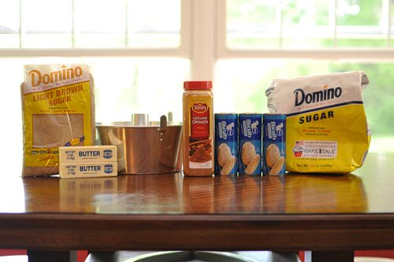

Monkey Bread

Description
This is one of those recipies that the kids will lo make and it can sit at the table like a birdfeeder as everyone flies by to pick a piece. As with the rest of this meal, there's not so much a right and wrong as preferences. Some people may have more butter and make it a running sauce that pools onto the plate while others will use less butter preportions and have a reasonably clean sticky bread. Experiment, find your perfect consistancy and variants knowing that even if its not picture perfect, it will still yummy.
This is called Monkey Bread because you eat it wtth your fingers. So skip the plates and utensils at teh end of this dinner party and just put a roll of paper towels, or those fancy paper napkins that look like cloth upon first glance if you must, and watch the smiles as they rip into this delish and easy dessert.
If you search Monkey Bread variations, you will find all kinds of interesting things from icing to herbs to pumkin spice to strawberries. However, at its basic, this is a quick gathering of five ingredients you may well have in your house. Happy creative endings
Ingredients

- About a half cup of brown sugar, light or dark
- 2 sticks of butter
- A couple to few teaspoons of Cinnamon to your liking
- 3 cans of NON-FLAKY refridgerated biscuits.
- sugar, enough to roll all the pieces around in.
- and grab a bunt pan for the traditional style cake
Steps
- Open biscuits and cut them into quarters, again do not have to have four perfect pieces at all and place into bunt pan
- Combine the sugar and cinnamon into a one gallon zip lock bag, shake to mix, then drop all of the biscuit pieces into the bag at the same time and shake until all coated.
- Feel free to give the bunt pan a whirl of cooking spray but the butter used will be sufficient. Drop the pieces into the bunt pan.
- In a sauce pan, melt the two sticks of butter and brown sugar, stirring over medium heat just until melded
- pour the liquid over the biscuit pieces and yes, it looks like the pieces are swimming in it but it will all work out, no worries.
- Bake at around 350 degress for about 30-40 minutes and let cool as long as your capable.
And the easy dessert is done deal. Now in the style of Europeans with a perfect paper sleeve of French bread, take a rip and pass on the goodness.